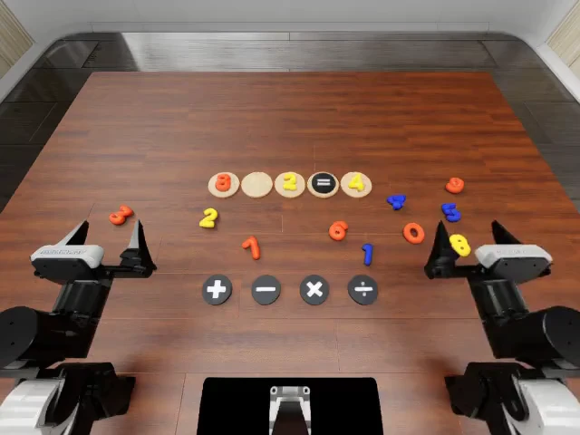
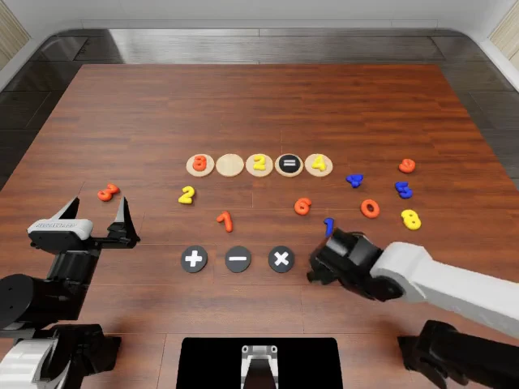
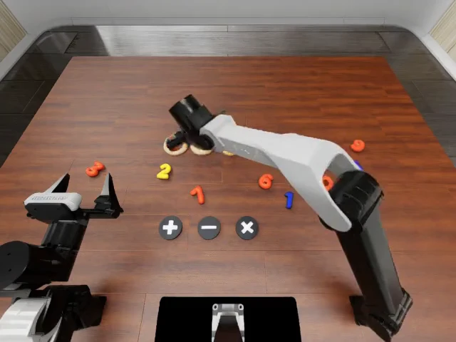
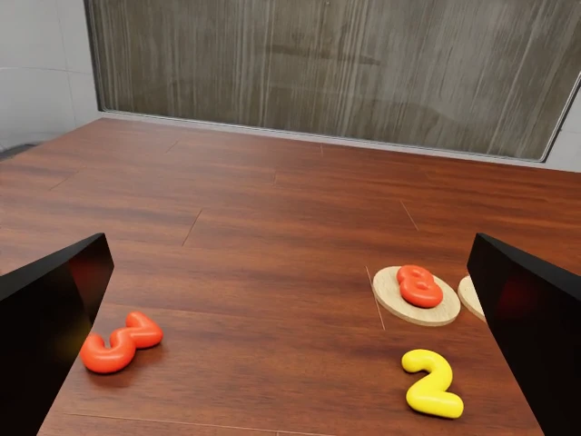
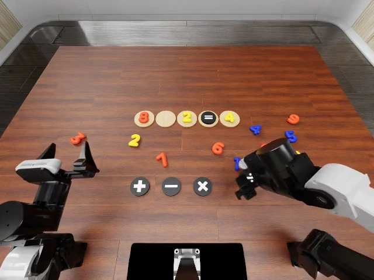
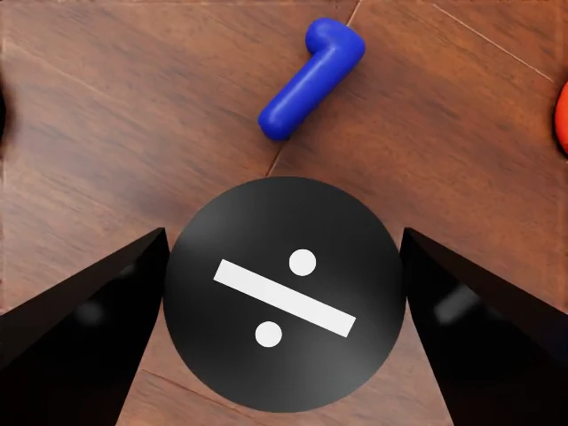
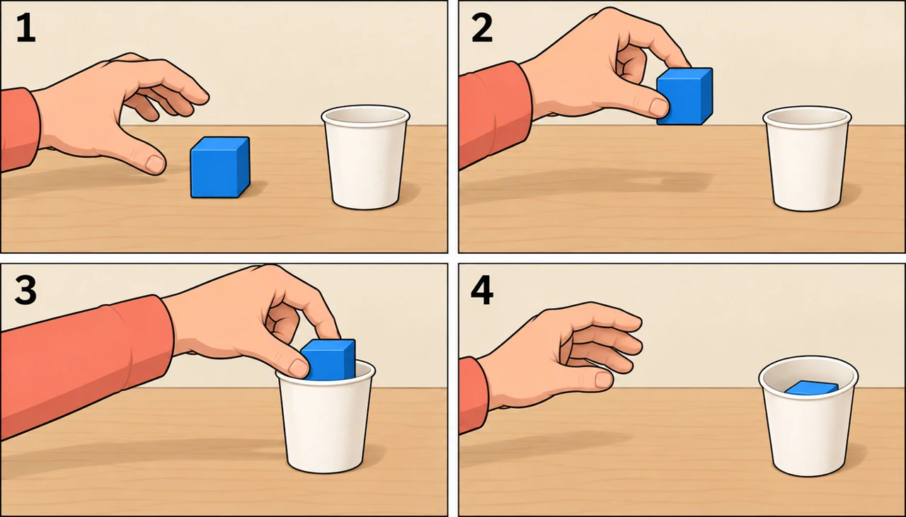

01 / Correct
A clear, correct interaction
The robot grasps the intended bottle and tilts it to pour.
VTA turns the behavioral knowledge of video foundation models into precise, closed-loop robot actions—with limited embodiment-specific data.
Scale visual knowledge.
Ground it in action.
01 / INSTRUCTION FOLLOWING IN DETAIL
Arm choice, grasp location, object selection, and placement style all change the intended behavior. VTA expresses these details as visual thought and carries them through to execution.
Changing the instruction changes the acting arm, the grasp point, or the coordination between both arms.
02 / WHERE GENERALIZATION BEGINS
With the same VTA execution interface and 20 hours of target adaptation, a general-purpose video model transfers richer instruction-following behavior to the robot.
BAGEL + embodied pretraining → MiniMax H3
The robot grasps the intended bottle and tilts it to pour.
Visual degradation obscures the grasp and motion, weakening the plan's guidance.
The video plans a grasp of the bowl instead of the bottle.
03 / THE VISUAL THOUGHT ACTION MODEL
Visual thought expresses both what to accomplish and how to accomplish it. VTA preserves this rich intent while letting execution respond to the world in real time.
Imagines a complete semantic subtask in the robot's scene.



Encodes the plan into action-grounded tokens for the executor.
Combines plan memory with live observations for closed-loop actions.



Learn the interface together. Joint IDM–VLA training lets execution-loss gradients shape a plan representation that the controller can use.
The IDM compiles the video plan into compact memory once per semantic subtask. The VLA combines this memory with fresh observations for 15 Hz feedback control, preserving the intended behavior while responding to the current scene. The right-hand branch uses video similarity to provide a dense reward for refining the executor.
04 / INHERITED MULTIMODAL CAPABILITIES
Images, videos and audio can specify intent through the video foundation model's existing interface. The same visual-thought pathway grounds that intent in robot action.
No ICL-specific training
An animated character provides the behavioral reference; the robot realizes the pouring interaction in its own scene.
Qualitative reference-conditioned examples · Fixed model parameters at inference
05 / THE EXPERIMENTAL PICTURE
Across unseen real-world tasks, open-ended instructions and randomized simulation scenes, VTA connects broad video knowledge to effective manipulation.
WHAT THE TASK TESTS
Five tasks excluded from the adaptation task set · 20 trials per task · No task-specific fine-tuning
Scores and evaluation settings follow the technical report. Simulation baseline scores are reported from the leaderboards cited in the paper.
06 / BEYOND EXECUTION
An explicit video representation does more than condition actions. It supplies a target for reinforcement learning and generates demonstrations for downstream policies.
Video similarity supplies feedback from contact through placement, complementing task-completion reward. In this rollout, the policy grasps the division symbol and releases it onto the target mat to complete 8 ÷ 2 = 4.
Varied prompts and initial scenes produce diverse manipulation trajectories. The IDM supplies action labels, turning these imagined interactions into demonstrations for policy learning.
Filtering 1,000 candidate videos yields 760 trajectories with IDM action labels. This corpus raises a downstream policy's mean success from 8% to 76%.
THE RESEARCH
Generalizable robot manipulation requires following diverse, fine-grained instructions beyond the coverage of robot demonstrations. VTA transfers the behavioral priors of general-purpose video foundation models through visual thought: an explicit video representation that specifies what to accomplish and how to accomplish it.
A Video Expert imagines a semantic subtask, an IDM Expert compiles it into compact plan memory, and a VLA Expert combines that memory with live observations for high-frequency feedback control. The same representation supports multimodal in-context learning without ICL-specific training, dense rewards for reinforcement learning, and action-labeled data synthesis.
@misc{seed2026vta,
title = {Scaling Video Foundation Models Enables
Generalizable Robot Behavior},
author = {{ByteDance Seed}},
year = {2026}
}